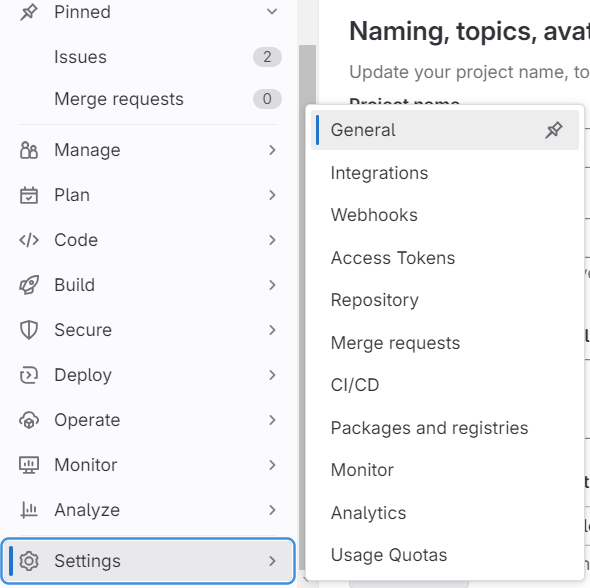
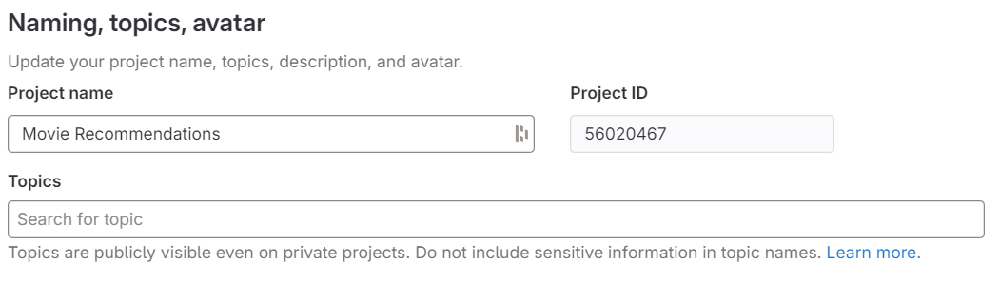
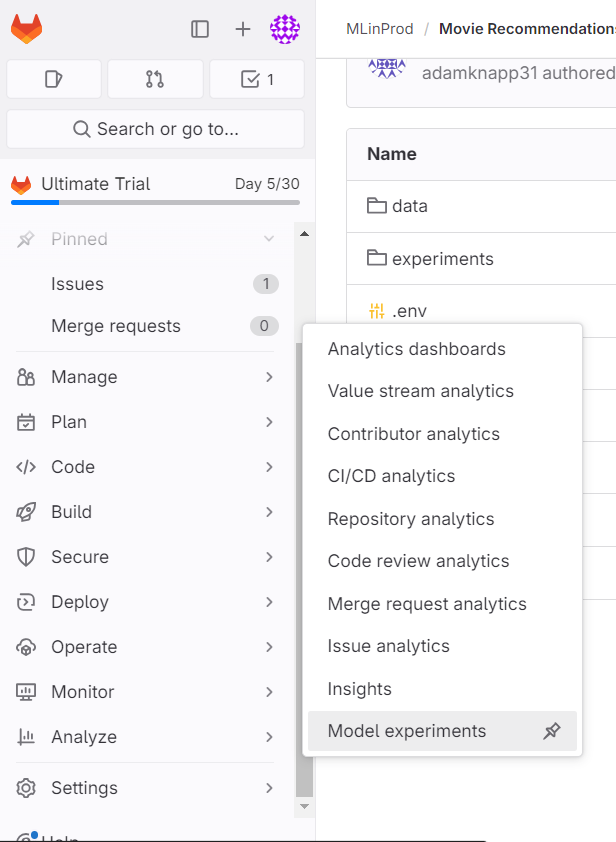
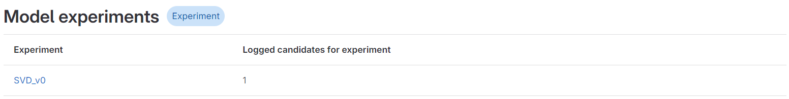
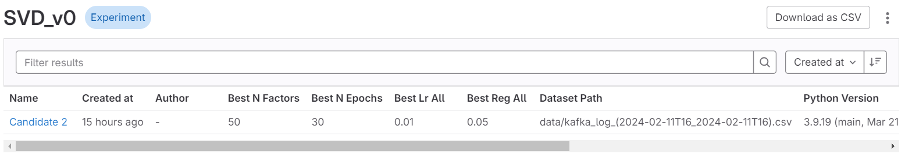
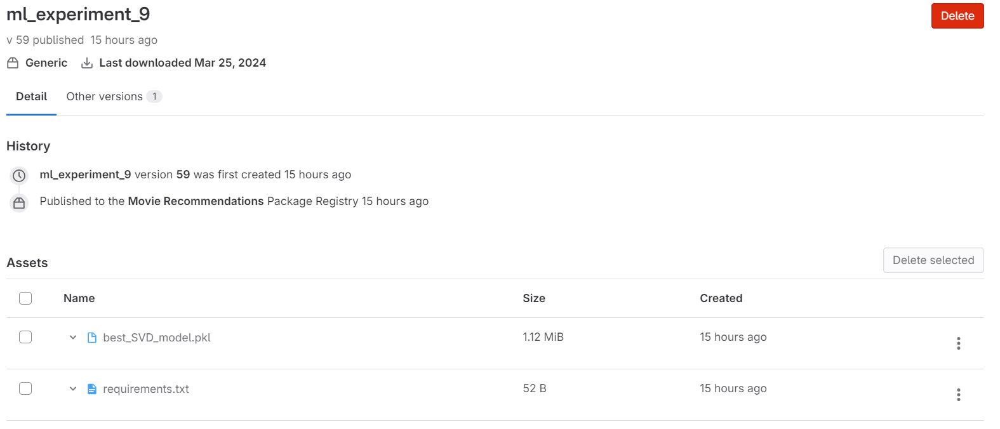

GitLab, founded in 2014, quickly emerged as a frontrunner in the DevOps
toolchain, offering a single application for the entire software development lifecycle. From project planning and
source code management to CI/CD, monitoring, and security, GitLab has provided comprehensive solutions that
streamline productivity and foster a collaborative environment for software development teams. Its ability to
support both the development and operations side of projects makes it particularly appealing for managing machine
learning (ML) projects, which inherently require cross-disciplinary collaboration between software engineers and
data scientists.
GitLab MLOps
MLOps, merging machine learning with operations, seeks to unify ML system development and deployment. The aim is to expedite the lifecycle of deploying machine learning models and ensure continuous improvement through feedback loops between model performance and development efforts. GitLab, with its robust DevOps toolchain including CI/CD, automated testing, and monitoring, has embraced MLOps, introducing specific tools to bridge the gap between data scientists and software developers.
Model exploration, often hindered by non-standardized Jupyter notebooks, poses a significant challenge to collaboration. To address this, tools like MLflow and W&B were developed, enabling tracking of model evolution and facilitating model sharing to ensure organizational reproducibility.
GitLab's integration of MLflow through its Experiments and Model Registry features exemplifies its commitment to enhancing the MLOps workflow. The MLflow client, typically external, is hosted within GitLab, granting all team members direct access to ML model production without additional infrastructure. GitLab Experiments leverage MLflow for detailed logging and information storage about significant models, aiding internal sharing. Furthermore, the Model Registry supports model versioning for deployment, allowing the consolidation of experiments into a single, deployment-ready location. Leveraging GitLab's DevOps tools, model deployment can seamlessly integrate into existing pipelines, streamlining the process.
While Experiments and Model Registry serve similar purposes, this blog will primarily focus on the Experiments feature, highlighting its role in facilitating efficient, collaborative MLOps practices within GitLab.
GitLab Experiments
Overview
Experimentation is at the heart of machine learning. With GitLab experiments, ML developers can log their models in GitLab with the information needed to share their findings and make the model run reproducible. It is commonly perceived that Code, Data, and Environment are needed to be tracked with a model to make it reproducible. We'll highlight these aspects in our example.
GitLab experiments do not force you to log your model in a way to ensure it is reproducible, but in my example below, I will highlight some basic logs. Understand that every team is different and you will need to tailor how you use experiments to your team.
Setup
This feature is still in Beta testing and has very limited documentation. I will provide a step-by-step tutorial on how to implement so that you don't encounter the same issues I did. To complete this, you should already have a GitLab account with at least one project.
Set Up GitLab API Key
Project Tokens
In your project, navigate to 'SETTINGS' -> 'ACCESS TOKENS'.
Add Token
Navigate to 'ADD NEW TOKEN'.
Token Configuration
Name your token, set an expiration date, select 'DEVELOPER' role (Experiments need a minimum of Developer role), and check "API" for Access Scope (Required Scope).
Save Token
Copy and save this token for later use.
Configuration
Obtain Project ID
General Settings

From a project, navigate to SETTINGS -> GENERAL.
Project ID

Copy and save your project ID for later use.
Install MLFlow
pip install mlflow==2.11.2
Set the endpoint of MLFlow to GitLab
os.environ["MLFLOW_TRACKING_TOKEN"]='[Saved API Token]'
os.environ["MLFLOW_TRACKING_URI"]='http://[your gitlab instance]/api/v4/projects/[your project id]/ml/mlflow'
Note: Your GitLab instance relates to the first part of the URL. Ex. for "https://gitlab.com/group-name/project-name" the GitLab instance is "gitlab.com".
Use the MLflow library to log experiments in .py or .ipynb files
# Example usage
import mlflow
# Set the experiment name
mlflow.set_experiment(experiment_name="Experiment")
# Start the run within the experiment
mlflow.start_run(run_name="Run")
# Log model parameters
mlflow.log_param("model parameter", "parameter_value")
# Log metrics for the model
mlflow.log_metric("model_metric", 1.0)
# Log an artifact to be saved with the run
mlflow.log_artifact("path/to/file")
# End the logging
mlflow.end_run()
Movie Recommendations Example
In this example, we demonstrate the use of model experiments within a movie recommendation system. By incorporating GitLab Experiments into their notebooks, a multi-person team can efficiently capture progress and share insights with one another, enhancing collaboration and project management.
# Imports
import os
import sys
import subprocess
import mlflow
from surprise import Dataset, Reader, SVD, accuracy
from surprise.model_selection import train_test_split, GridSearchCV
import pickle
# Import data
data_path = os.path.join("..", "..", "data", "movie_ratings.csv")
user_rating_data_df = utilities.process_csv(data_path)
# Set MLflow tracking environment variables
os.environ["MLFLOW_TRACKING_TOKEN"] = '[Your Saved API Token]'
os.environ["MLFLOW_TRACKING_URI"] = 'https://gitlab.com/api/v4/projects/[Your Project ID]/ml/mlflow'
def train_and_evaluate_model(user_rating_data_df):
reader = Reader(rating_scale=(1, 5))
data = Dataset.load_from_df(user_rating_data_df[['UserID', 'Title', 'Rating']], reader)
param_grid = {
'n_factors': [50, 100, 150],
'n_epochs': [20, 30],
'lr_all': [0.005, 0.010],
'reg_all': [0.02, 0.05]
}
gs = GridSearchCV(SVD, param_grid, measures=['rmse', 'mae'], cv=3, n_jobs=-1)
gs.fit(data)
best_model_params = gs.best_params['rmse']
print(f"Best model parameters: {best_model_params}")
# Splitting the dataset into training and testing sets
trainset, testset = train_test_split(data, test_size=0.25)
# Initialize the best model with the best parameters
best_model = SVD(**best_model_params)
# Directly fit the best model to the training set
best_model.fit(trainset)
# Test the best model on the test set
predictions = best_model.test(testset)
# Calculate and print the performance metrics
rmse = accuracy.rmse(predictions, verbose=True)
mae = accuracy.mae(predictions, verbose=True)
print(f"Test Set RMSE: {rmse}")
print(f"Test Set MAE: {mae}")
### Log best model ###
#Set up the experiment and the run in that experiment
mlflow.set_experiment(experiment_name=f'SVD_v0') #named based on the type of model
mlflow.start_run(run_name=f"Candidate {2}")
# Log the best hyperparameters
for param, value in best_model_params.items():
mlflow.log_param(f"best_{param}", value)
# Log performance of model
mlflow.log_metric(f"RMSE", rmse)
mlflow.log_metric(f"MAE", mae)
# Log dataset path- this allows team members to reproduce the testing
csv_file_path = "data/kafka_log_(2024-02-11T16_2024-02-11T16).csv"
mlflow.log_param("dataset_path", csv_file_path)
# Log Python version
mlflow.log_param("python_version", sys.version)
# Log requirements.txt and make a requirements.txt if not there
requirements_file = "requirements.txt"
if not os.path.exists(requirements_file):
print("requirements.txt not found, generating...")
requirements = subprocess.check_output([sys.executable, '-m', 'pip', 'freeze']).decode('utf-8')
with open(requirements_file, "w") as f:
f.write(requirements)
mlflow.log_artifact(requirements_file)
# Serialize and log the best model
model_filename = "best_SVD_model.pkl"
with open(model_filename, "wb") as f:
pickle.dump(best_model, f)
mlflow.log_artifact(model_filename)
#end the logging
mlflow.end_run()
return best_model
train_and_evaluate_model(user_rating_data_df)
After running the above code, the SVD experiment will be visible in GitLab. The following screenshots
highlight how to view a logged model in GitLab Experiments:

Navigate to Model Experiments by Selecting ANALYIS -> EXPERIMENTS

Select Experiment you would like to explore


After selecting ARTIFACTS, all logged files can be found and downloaded
Conclusion
In conclusion, the exploration of GitLab's Experiments underscores the platform's continued
expansion into a comprehensive DevOps toolchain. The integration of MLflow into GitLab exemplifies
their commitment to adopting successful design patterns favored by ML developers. However, this tight
integration also makes GitLab susceptible to potential issues when new versions of MLflow are released.
Despite these challenges, the future of GitLab Experiments, as it transitions from beta to a fully integrated
product within the MLOps pipeline, is eagerly anticipated. Watching how GitLab Experiments matures and
enhances the machine learning workflow is an exciting prospect for developers and teams alike.